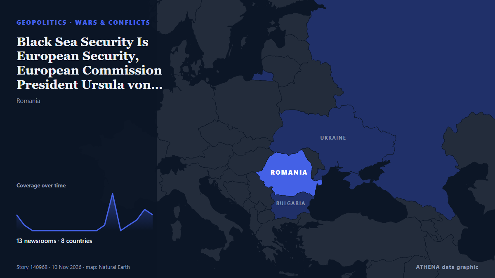

Πόλεμοι & συγκρούσεις
ΧορηγούμενοΠαρουσιάζεται από  Cybernetics and Artificial Intelligence Lab Welcome to the Cybernetics and Artificial Intelligence Laboratory, established at the Department of Business Administration of the National and Kapodistrian University of Athens. The lab is headed by Professor Dimitrios Thomakos. The lab aims to do research that can be published in top venues. Our research uses tools and methods of Artificial Intelligence, and lies in the following areas: - Forecasting - Decision making - Cyber security - Finance We are always looking forward to collaborating with exceptional students!
Cybernetics and Artificial Intelligence Lab Welcome to the Cybernetics and Artificial Intelligence Laboratory, established at the Department of Business Administration of the National and Kapodistrian University of Athens. The lab is headed by Professor Dimitrios Thomakos. The lab aims to do research that can be published in top venues. Our research uses tools and methods of Artificial Intelligence, and lies in the following areas: - Forecasting - Decision making - Cyber security - Finance We are always looking forward to collaborating with exceptional students!
| 28 Οκτ | 0 |
|---|---|
| 29 Οκτ | 0 |
| 30 Οκτ | 0 |
| 31 Οκτ | 0 |
| 1 Νοε | 0 |
| 2 Νοε | 1 |
| 3 Νοε | 0 |
| 4 Νοε | 0 |
| 5 Νοε | 0 |
| 6 Νοε | 3 |
| 7 Νοε | 8 |
| 8 Νοε | 8 |
| 9 Νοε | 2 |
| 10 Νοε | 2 |
Οι τίτλοι των ειδήσεων παρουσιάζονται στα αγγλικά, όπως δημοσιεύτηκαν.

Black Sea Security Is European Security, European Commission President Ursula von der Leyen Says in Varna
The trip comes after at least seven commercial vessels were reportedly struck by drones that many have linked to Russia. από Politico Europe
Trump says Iran war ‘effectively over’ militarily, but US ready to strike again
US President Donald Trump said Monday the war with Iran was effectively over militarily but warned US forces remained “locked and loaded,” while Iran's security chief denied reports of talks with… από Iran International (English)
US seeing 'strong inclination' Ukraine war to end - Trump
US President Donald Trump has said that Washington was seeing a "very strong inclination" towards ending Russia's war in Ukraine and that both sides were "tired of fighting." από RTÉ News
Four Killed in Gaza after Sand Embankment Collapses on to Tents
Torrential rain in Gaza caused a sand embankment to collapse on to tents, killing a woman and three small children in an incident that highlighted the danger facing hundreds of thousands of displaced… από Cyprus Mail
Riyadh financial district targeted, Aramco skyscraper damaged
An Aramco building in Riyadh was targeted in an "attempted attack", the Saudi energy ministry said on Sunday, with eyewitnesses telling AFP the skyscraper sustained damage, after the Saudi-led… από Al-Monitor
Explosions heard in Saudi capital Riyadh: media
Multiple loud booms were heard in the Saudi capital Riyadh shortly after Civil Defense issued an early-warning alert of a potential threat, a Reuters witness said, as hosti... από Oman Observer
Nine foreigners caught allegedly trying to leave South Africa to fight in Ukraine
Nine foreigners have been arrested in South Africa after they were caught allegedly trying to leave the country to fight in the war between Russia and the Ukraine, police say. από Club of Mozambique
Syria denies plans to send troops to Yemen as Saudi military ties deepen
Nov 7 (Reuters) - Syria has no plans to send troops to Yemen, a Syrian diplomatic source told state news agency SANA, dismissing reportsof a possible deployment while adding that military cooperation… από Al-Monitor
US launches task force to disrupt land transit routes into Iran
Iran's Islamic Revolutionary Guard Corps said Washington's latest bid "will fail" and will not bring about economic collapse in the Islamic republic. από The Business Standard (Bangladesh) (working feed)
US Offers Up to $20 Million Reward for Information on Iran’s Nuclear Program
WASHINGTON, Nov 7: The United States has announced a reward of up to $20 million, along with possible relocation, for information about Iran’s nuclear program, including its facili... από Arab Times
Explosions heard on Iran's Qeshm Island, state media reports
TEHRAN, Nov 3: Several explosions were heard from the direction of the sea near Iran's southern port city of Bandar Lengeh on Monday, according to the IRGC-affiliated Fars news age... από Arab Times
US strikes on Iran's Qeshm Island cause no damage to vital infrastructure: Official
Hormozgan deputy governor says targeted sites were outside residential, commercial areas, with emergency services on high alert. από Anadolu Agency (English)
US launches task force to disrupt land transit routes into Iran
US Central Command chief Brad Cooper said the task force would further limit Iran's ability to fund terrorism, rebuild weapons factories and replenish its military. από Free Malaysia Today
Russian strikes cut power to hundreds of thousands in Ukraine
Ukraine is bracing for a new harsh winter of war as Russia ramps up daily aerial barrages, raining down drones and missiles on the power network. από Free Malaysia Today
Iran says it has lifted its self-imposed limit on missile ranges, and other Mideast news
Iran’s Revolutionary Guard says it has lifted a self-imposed limit of 2,000 kilometers (1,200 miles) on the range of its ballistic missiles, suggesting the country may seek to develop missiles… από The Canadian Press (via CityNews)
Iran suggests blasts are not US attacks as both sides report ships hit
CAIRO, Nov 8 (Reuters) - Iranian media suggested explosions in southern Iran on Saturday evening were related to Iranian military activities rather than US strikes while both sides reported that… από Al-Monitor
Russian Strikes On Energy Targets Leave 600,000 Ukrainians Without Electricity
Russian attacks on the power system in Ukraine's eastern Dnipropetrovsk region have left 600,000 people without electricity as the Kremlin's campaign against energy targets continued on November 8. από RFE/RL (English)
Houthis say 33 killed in Saudi strikes on Yemen's Sanaa province
Yemen’s Houthis say at least 25 people have been killed and 30 injured in air strikes. από Al Jazeera English
Iran says forces 'stronger' than at beginning of war
Iran claims its military capabilities have enhanced amid ongoing tensions with the United States and Middle East conflict. από Arab News